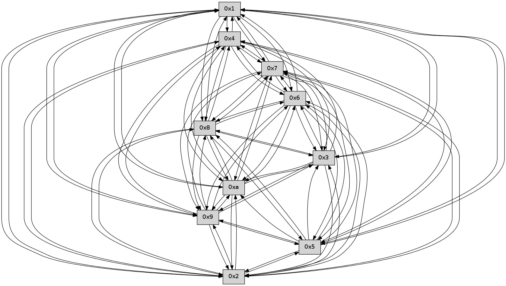

>> << IDX [start] -100 -25 -5 +0 +5 +25 +100 [445.004390001]
 Previous packets
----------------------------------------------------------------------
440.205612 beacon01(faad) #0 coord=01,02,03,04,05,06,07,0a,09,08 cycle=688.0ms assoc
-- color-indic=0 64 fd eb
440.215595 beacon02(faad) #0 coord=01,02,03,04,05,06,07,0a,09,08 cycle=688.0ms assoc 64 6e da
440.225595 beacon03(faad) #0 coord=01,02,03,04,05,06,07,0a,09,08 cycle=688.0ms assoc 64 14 97
440.235595 beacon04(faad) #0 coord=01,02,03,04,05,06,07,0a,09,08 cycle=688.0ms assoc 64 63 7d
440.245595 beacon05(faad) #0 coord=01,02,03,04,05,06,07,0a,09,08 cycle=688.0ms assoc 64 19 30
440.255595 beacon06(faad) #0 coord=01,02,03,04,05,06,07,0a,09,08 cycle=688.0ms assoc 64 97 e7
440.265595 beacon07(faad) #0 coord=01,02,03,04,05,06,07,0a,09,08 cycle=688.0ms assoc 64 ed aa
440.275600 beacon0a(faad) #0 coord=01,02,03,04,05,06,07,0a,09,08 cycle=688.0ms assoc 64 9c a1
440.285600 beacon09(faad) #0 coord=01,02,03,04,05,06,07,0a,09,08 cycle=688.0ms assoc 64 12 76
440.295601 beacon08(faad) #0 coord=01,02,03,04,05,06,07,0a,09,08 cycle=688.0ms assoc 64 68 3b
440.307068 [Hello(6): seq=284 sym=2,3,5,4,7,9,8,10,1 sysInfo= stat=2:5,0,0,0/3:9,0,0,0/5:1,0,0,0/4:9,0,0,0/7:14,0,0,0/9:14,0,0,0/8:4,0,0,0/10:1,0,0,0/1:5,0,0,0]
440.311689 [Hello(7): seq=284 sym=2,3,5,6,4,8,9,10,1 sysInfo= stat=2:6,0,0,0/3:3,0,0,0/5:7,0,0,0/6:5,0,0,0/4:1,0,0,0/8:10,0,0,0/9:10,0,0,0/10:1,0,0,0/1:7,0,0,0]
440.315825 [Hello(1): seq=193 sym=4,2,9,5,10,3,8,6,7 sysInfo= stat=4:8,0,0,0/2:14,0,0,0/9:15,0,0,0/5:11,0,0,0/10:12,0,0,0/3:2,0,0,0/8:14,0,0,0/6:7,0,0,0/7:14,0,0,0]
----------------------------------------------------------------------
440.993743 beacon01(faad) #0 coord=01,02,03,04,05,06,07,0a,09,08 cycle=688.0ms assoc
-- color-indic=0 64 41 ee
441.003727 beacon02(faad) #0 coord=01,02,03,04,05,06,07,0a,09,08 cycle=688.0ms assoc 64 d2 df
441.013725 beacon03(faad) #0 coord=01,02,03,04,05,06,07,0a,09,08 cycle=688.0ms assoc 64 a8 92
441.023726 beacon04(faad) #0 coord=01,02,03,04,05,06,07,0a,09,08 cycle=688.0ms assoc 64 df 78
441.033729 beacon05(faad) #0 coord=01,02,03,04,05,06,07,0a,09,08 cycle=688.0ms assoc 64 a5 35
441.043727 beacon06(faad) #0 coord=01,02,03,04,05,06,07,0a,09,08 cycle=688.0ms assoc 64 2b e2
441.053728 beacon07(faad) #0 coord=01,02,03,04,05,06,07,0a,09,08 cycle=688.0ms assoc 64 51 af
441.063732 beacon0a(faad) #0 coord=01,02,03,04,05,06,07,0a,09,08 cycle=688.0ms assoc 64 20 a4
441.073732 beacon09(faad) #0 coord=01,02,03,04,05,06,07,0a,09,08 cycle=688.0ms assoc 64 ae 73
441.083732 beacon08(faad) #0 coord=01,02,03,04,05,06,07,0a,09,08 cycle=688.0ms assoc 64 d4 3e
441.095209 [Hello(8): seq=228 sym=5,2,3,4,7,6,9,10,1 sysInfo= stat=5:13,0,0,0/2:2,0,0,0/3:0,0,0,0/4:4,0,0,0/7:10,0,0,0/6:1,0,0,0/9:11,0,0,0/10:6,0,0,0/1:9,0,0,0]
441.097890 [Hello(5): seq=285 sym=7,6,4,3,1,9,8,10,2 sysInfo= stat=7:4,0,0,0/6:8,0,0,0/4:6,0,0,0/3:15,0,0,0/1:1,0,0,0/9:6,0,0,0/8:12,0,0,0/10:1,0,0,0/2:8,0,0,0]
441.100437 [Hello(9): seq=228 sym=5,2,3,4,7,6,8,10,1 sysInfo= stat=5:5,0,0,0/2:1,0,0,0/3:2,0,0,0/4:0,0,0,0/7:11,0,0,0/6:4,0,0,0/8:15,0,0,0/10:7,0,0,0/1:9,0,0,0]
441.103768 [Hello(10): seq=217 sym=6,3,5,9,8,7,4,1 sysInfo= stat=6:14,0,0,0/3:8,0,0,0/5:5,0,0,0/9:8,0,0,0/8:0,0,0,0/7:3,0,0,0/4:8,0,0,0/1:3,0,0,0]
441.106350 [Hello(3): seq=285 sym=1,7,6,2,4,8,9,10,5 sysInfo= stat=1:9,0,0,0/7:14,0,0,0/6:9,0,0,0/2:7,0,0,0/4:12,0,0,0/8:8,0,0,0/9:3,0,0,0/10:11,0,0,0/5:4,0,0,0]
441.111108 [Hello(4): seq=285 sym=5,7,6,2,3,9,8,10,1 sysInfo= stat=5:4,0,0,0/7:7,0,0,0/6:11,0,0,0/2:5,0,0,0/3:13,0,0,0/9:8,0,0,0/8:1,0,0,0/10:14,0,0,0/1:0,0,0,0]
441.117361 [Hello(2): seq=282 sym=4,5,7,6,3,9,8,10,1 sysInfo= stat=4:1,0,0,0/5:15,0,0,0/7:2,0,0,0/6:8,0,0,0/3:13,0,0,0/9:7,0,0,0/8:9,0,0,0/10:12,0,0,0/1:14,0,0,0]
----------------------------------------------------------------------
441.781876 beacon01(faad) #0 coord=01,02,03,04,05,06,07,0a,09,08 cycle=688.0ms assoc
-- color-indic=0 64 85 e0
441.791857 beacon02(faad) #0 coord=01,02,03,04,05,06,07,0a,09,08 cycle=688.0ms assoc 64 16 d1
441.801858 beacon03(faad) #0 coord=01,02,03,04,05,06,07,0a,09,08 cycle=688.0ms assoc 64 6c 9c
441.811860 beacon04(faad) #0 coord=01,02,03,04,05,06,07,0a,09,08 cycle=688.0ms assoc 64 1b 76
441.821859 beacon05(faad) #0 coord=01,02,03,04,05,06,07,0a,09,08 cycle=688.0ms assoc 64 61 3b
441.831859 beacon06(faad) #0 coord=01,02,03,04,05,06,07,0a,09,08 cycle=688.0ms assoc 64 ef ec
441.841860 beacon07(faad) #0 coord=01,02,03,04,05,06,07,0a,09,08 cycle=688.0ms assoc 64 95 a1
441.851865 beacon0a(faad) #0 coord=01,02,03,04,05,06,07,0a,09,08 cycle=688.0ms assoc 64 e4 aa
441.861863 beacon09(faad) #0 coord=01,02,03,04,05,06,07,0a,09,08 cycle=688.0ms assoc 64 6a 7d
441.871863 beacon08(faad) #0 coord=01,02,03,04,05,06,07,0a,09,08 cycle=688.0ms assoc 64 10 30
441.883681 [Hello(1): seq=194 sym=4,2,9,5,10,3,8,6,7 sysInfo= stat=4:9,0,0,0/2:15,0,0,0/9:0,0,0,0/5:12,0,0,0/10:13,0,0,0/3:3,0,0,0/8:15,0,0,0/6:7,0,0,0/7:14,0,0,0]
441.886993 [Hello(7): seq=285 sym=2,3,5,6,4,8,9,10,1 sysInfo= stat=2:7,0,0,0/3:4,0,0,0/5:8,0,0,0/6:5,0,0,0/4:2,0,0,0/8:11,0,0,0/9:11,0,0,0/10:2,0,0,0/1:8,0,0,0]
441.894167 [Hello(6): seq=285 sym=2,3,5,4,7,9,8,10,1 sysInfo= stat=2:6,0,0,0/3:10,0,0,0/5:2,0,0,0/4:10,0,0,0/7:15,0,0,0/9:15,0,0,0/8:5,0,0,0/10:2,0,0,0/1:6,0,0,0]
----------------------------------------------------------------------
442.570006 beacon01(faad) #0 coord=01,02,03,04,05,06,07,0a,09,08 cycle=688.0ms assoc
-- color-indic=0 64 39 e5
442.579988 beacon02(faad) #0 coord=01,02,03,04,05,06,07,0a,09,08 cycle=688.0ms assoc 64 aa d4
442.589988 beacon03(faad) #0 coord=01,02,03,04,05,06,07,0a,09,08 cycle=688.0ms assoc 64 d0 99
442.599992 beacon04(faad) #0 coord=01,02,03,04,05,06,07,0a,09,08 cycle=688.0ms assoc 64 a7 73
442.609989 beacon05(faad) #0 coord=01,02,03,04,05,06,07,0a,09,08 cycle=688.0ms assoc 64 dd 3e
442.619988 beacon06(faad) #0 coord=01,02,03,04,05,06,07,0a,09,08 cycle=688.0ms assoc 64 53 e9
442.629989 beacon07(faad) #0 coord=01,02,03,04,05,06,07,0a,09,08 cycle=688.0ms assoc 64 29 a4
442.639994 beacon0a(faad) #0 coord=01,02,03,04,05,06,07,0a,09,08 cycle=688.0ms assoc 64 58 af
442.649994 beacon09(faad) #0 coord=01,02,03,04,05,06,07,0a,09,08 cycle=688.0ms assoc 64 d6 78
442.659994 beacon08(faad) #0 coord=01,02,03,04,05,06,07,0a,09,08 cycle=688.0ms assoc 64 ac 35
442.671167 [Hello(5): seq=286 sym=7,6,4,3,1,9,8,10,2 sysInfo= stat=7:5,0,0,0/6:9,0,0,0/4:7,0,0,0/3:0,0,0,0/1:2,0,0,0/9:7,0,0,0/8:12,0,0,0/10:2,0,0,0/2:9,0,0,0]
442.673844 [Hello(3): seq=286 sym=1,7,6,2,4,8,9,10,5 sysInfo= stat=1:10,0,0,0/7:15,0,0,0/6:10,0,0,0/2:8,0,0,0/4:13,0,0,0/8:8,0,0,0/9:3,0,0,0/10:11,0,0,0/5:4,0,0,0]
442.677495 [Hello(8): seq=229 sym=5,2,3,4,7,6,9,10,1 sysInfo= stat=5:14,0,0,0/2:3,0,0,0/3:1,0,0,0/4:5,0,0,0/7:11,0,0,0/6:2,0,0,0/9:12,0,0,0/10:7,0,0,0/1:10,0,0,0]
442.681972 [Hello(10): seq=218 sym=6,3,2,5,9,8,7,4,1 sysInfo= stat=6:15,0,0,0/3:9,0,0,0/2:0,0,0,0/5:5,0,0,0/9:8,0,0,0/8:0,0,0,0/7:4,0,0,0/4:9,0,0,0/1:4,0,0,0]
442.686150 [Hello(2): seq=283 sym=4,5,7,6,3,9,8,10,1 sysInfo= stat=4:1,0,0,0/5:15,0,0,0/7:3,0,0,0/6:9,0,0,0/3:13,0,0,0/9:7,0,0,0/8:9,0,0,0/10:12,0,0,0/1:15,0,0,0]
442.694084 [Hello(4): seq=286 sym=5,7,6,2,3,9,8,10,1 sysInfo= stat=5:4,0,0,0/7:8,0,0,0/6:12,0,0,0/2:6,0,0,0/3:13,0,0,0/9:8,0,0,0/8:1,0,0,0/10:14,0,0,0/1:1,0,0,0]
----------------------------------------------------------------------
443.358141 beacon01(faad) #0 coord=01,02,03,04,05,06,07,0a,09,08 cycle=688.0ms assoc
-- color-indic=0 64 0d fd
443.368123 beacon02(faad) #0 coord=01,02,03,04,05,06,07,0a,09,08 cycle=688.0ms assoc 64 9e cc
443.378124 beacon03(faad) #0 coord=01,02,03,04,05,06,07,0a,09,08 cycle=688.0ms assoc 64 e4 81
443.388124 beacon04(faad) #0 coord=01,02,03,04,05,06,07,0a,09,08 cycle=688.0ms assoc 64 93 6b
443.398125 beacon05(faad) #0 coord=01,02,03,04,05,06,07,0a,09,08 cycle=688.0ms assoc 64 e9 26
443.408123 beacon06(faad) #0 coord=01,02,03,04,05,06,07,0a,09,08 cycle=688.0ms assoc 64 67 f1
443.418125 beacon07(faad) #0 coord=01,02,03,04,05,06,07,0a,09,08 cycle=688.0ms assoc 64 1d bc
443.428131 beacon0a(faad) #0 coord=01,02,03,04,05,06,07,0a,09,08 cycle=688.0ms assoc 64 6c b7
443.438130 beacon09(faad) #0 coord=01,02,03,04,05,06,07,0a,09,08 cycle=688.0ms assoc 64 e2 60
443.448129 beacon08(faad) #0 coord=01,02,03,04,05,06,07,0a,09,08 cycle=688.0ms assoc 64 98 2d
443.458998 [Hello(1): seq=195 sym=4,2,9,5,10,3,8,6,7 sysInfo= stat=4:10,0,0,0/2:0,0,0,0/9:0,0,0,0/5:13,0,0,0/10:14,0,0,0/3:4,0,0,0/8:0,0,0,0/6:8,0,0,0/7:15,0,0,0]
443.462084 [Hello(7): seq=286 sym=2,3,5,6,4,8,9,10,1 sysInfo= stat=2:8,0,0,0/3:5,0,0,0/5:9,0,0,0/6:6,0,0,0/4:3,0,0,0/8:12,0,0,0/9:11,0,0,0/10:3,0,0,0/1:8,0,0,0]
443.467223 [Hello(6): seq=286 sym=2,3,5,4,7,9,8,10,1 sysInfo= stat=2:7,0,0,0/3:11,0,0,0/5:3,0,0,0/4:11,0,0,0/7:15,0,0,0/9:15,0,0,0/8:6,0,0,0/10:3,0,0,0/1:6,0,0,0]
----------------------------------------------------------------------
444.146272 beacon01(faad) #0 coord=01,02,03,04,05,06,07,0a,09,08 cycle=688.0ms assoc
-- color-indic=0 64 b1 f8
444.156254 beacon02(faad) #0 coord=01,02,03,04,05,06,07,0a,09,08 cycle=688.0ms assoc 64 22 c9
444.166255 beacon03(faad) #0 coord=01,02,03,04,05,06,07,0a,09,08 cycle=688.0ms assoc 64 58 84
444.176255 beacon04(faad) #0 coord=01,02,03,04,05,06,07,0a,09,08 cycle=688.0ms assoc 64 2f 6e
444.186255 beacon05(faad) #0 coord=01,02,03,04,05,06,07,0a,09,08 cycle=688.0ms assoc 64 55 23
444.196258 beacon06(faad) #0 coord=01,02,03,04,05,06,07,0a,09,08 cycle=688.0ms assoc 64 db f4
444.206257 beacon07(faad) #0 coord=01,02,03,04,05,06,07,0a,09,08 cycle=688.0ms assoc 64 a1 b9
444.216260 beacon0a(faad) #0 coord=01,02,03,04,05,06,07,0a,09,08 cycle=688.0ms assoc 64 d0 b2
444.226261 beacon09(faad) #0 coord=01,02,03,04,05,06,07,0a,09,08 cycle=688.0ms assoc 64 5e 65
444.236261 beacon08(faad) #0 coord=01,02,03,04,05,06,07,0a,09,08 cycle=688.0ms assoc 64 24 28
444.247739 [Hello(3): seq=287 sym=1,7,6,2,4,8,9,10 sysInfo= stat=1:11,0,0,0/7:0,0,0,0/6:11,0,0,0/2:9,0,0,0/4:14,0,0,0/8:9,0,0,0/9:3,0,0,0/10:12,0,0,0]
444.251067 [Hello(9): seq=230 sym=5,2,3,4,7,6,8,10,1 sysInfo= stat=5:5,0,0,0/2:3,0,0,0/3:3,0,0,0/4:2,0,0,0/7:13,0,0,0/6:6,0,0,0/8:0,0,0,0/10:9,0,0,0/1:11,0,0,0]
444.254730 [Hello(4): seq=287 sym=5,7,6,2,3,9,8,10,1 sysInfo= stat=5:4,0,0,0/7:9,0,0,0/6:13,0,0,0/2:6,0,0,0/3:13,0,0,0/9:8,0,0,0/8:1,0,0,0/10:14,0,0,0/1:2,0,0,0]
444.258540 [Hello(2): seq=284 sym=4,5,7,6,3,9,8,10,1 sysInfo= stat=4:2,0,0,0/5:15,0,0,0/7:4,0,0,0/6:10,0,0,0/3:13,0,0,0/9:7,0,0,0/8:9,0,0,0/10:12,0,0,0/1:0,0,0,0]
444.262862 [Hello(8): seq=230 sym=5,2,3,4,7,6,9,10,1 sysInfo= stat=5:14,0,0,0/2:4,0,0,0/3:1,0,0,0/4:6,0,0,0/7:12,0,0,0/6:3,0,0,0/9:12,0,0,0/10:8,0,0,0/1:11,0,0,0]
444.268294 [Hello(10): seq=219 sym=6,3,2,9,8,7,4,1 sysInfo= stat=6:0,0,0,0/3:9,0,0,0/2:1,0,0,0/9:8,0,0,0/8:0,0,0,0/7:5,0,0,0/4:10,0,0,0/1:5,0,0,0]
----------------------------------------------------------------------
444.934404 beacon01(faad) #0 coord=01,02,03,04,05,06,07,0a,09,08 cycle=688.0ms assoc
-- color-indic=0 64 75 f6
444.944386 beacon02(faad) #0 coord=01,02,03,04,05,06,07,0a,09,08 cycle=688.0ms assoc 64 e6 c7
444.954386 beacon03(faad) #0 coord=01,02,03,04,05,06,07,0a,09,08 cycle=688.0ms assoc 64 9c 8a
444.964387 beacon04(faad) #0 coord=01,02,03,04,05,06,07,0a,09,08 cycle=688.0ms assoc 64 eb 60
444.974386 beacon05(faad) #0 coord=01,02,03,04,05,06,07,0a,09,08 cycle=688.0ms assoc 64 91 2d
444.984387 beacon06(faad) #0 coord=01,02,03,04,05,06,07,0a,09,08 cycle=688.0ms assoc 64 1f fa
444.994387 beacon07(faad) #0 coord=01,02,03,04,05,06,07,0a,09,08 cycle=688.0ms assoc 64 65 b7